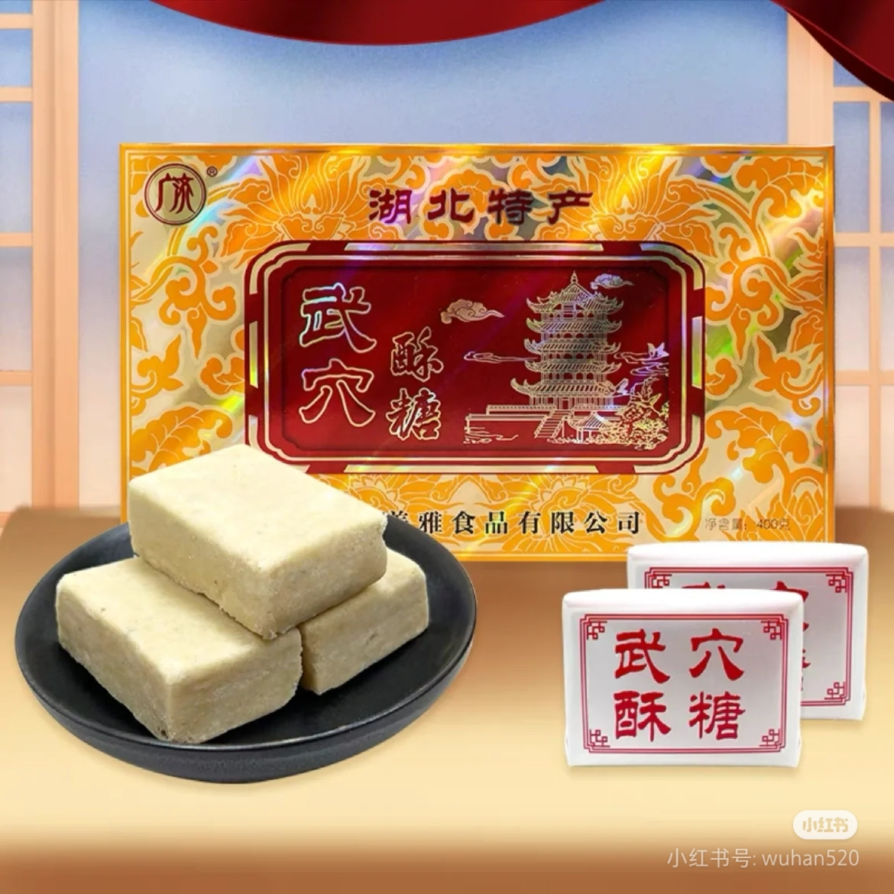
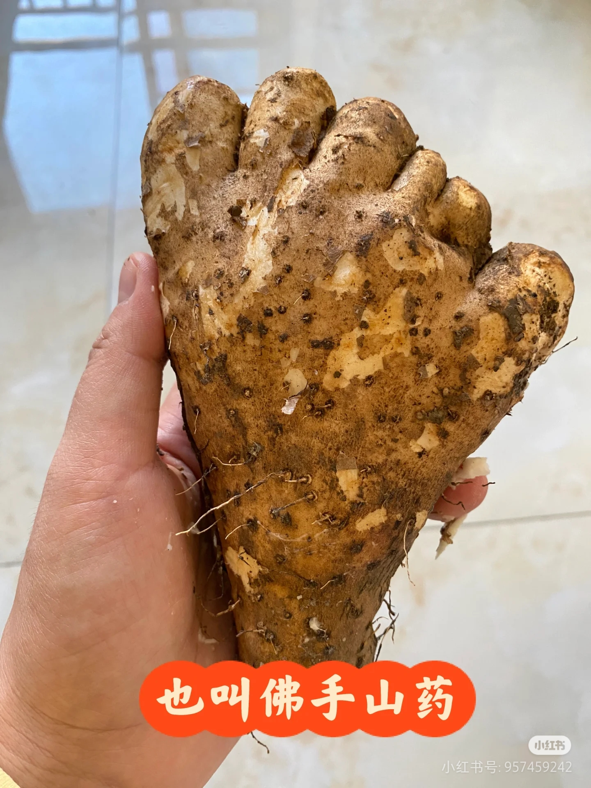

人文情怀
本地流行采茶调（或称调儿戏、广济采茶戏）、文曲戏、黄梅戏等地方剧种。有独立的黄梅戏团（现已改为武穴市文曲戏剧团）。曾于2007年举办湖北省第六届黄梅戏艺术节。武穴市地处古代荆州和扬州的分界，武穴市大部分居民都是明朝以前从江西赣抚平原（瓦屑坝）一带迁入，保留着明显的赣地风俗和语言（赣语）。民风重教，婚丧、生子、节日、房屋落成等仪式保留较多传统汉族习俗。饮食注重土菜，不避辛辣。
岳家拳
武穴是岳家拳传承发展地。宋绍兴十一年（1141年）岳飞蒙难后，其子岳震、岳霆和部分将士隐居养马岭村 ，与遗留下来的岳家军将士一起研习岳家拳术，岳家拳自此得以发展，并散播民间。2008年，武穴岳家拳被国务院批准为第二批国家级非物质文化遗产。岳家拳已成为武穴的文化品牌，该市多次派武术代表团前往香港、台湾交流表演，特别是在香港国际武术大赛中，获得七金十银。
武穴话

由于地理和历史的原因，武穴方言处于西南官话、下江官话、北方官话的河南话和赣方言的交界区，是一种难以划入某种确定的方言区而存在的特殊“楚语”，也可以说是一种混合性的方言。 武穴方言主要特征：在语音方面具有独特的U组韵母；鼻音声母有m、n、g等四个；有入声字，都带有喉塞音收尾；调类有六个，去声有阴阳之分。在语法方面，有一些句型的词序与普通话有别。在词汇方面，遗留有较多的楚语古词，还融汇了许多外来词。 凡来到或来过武穴的外来宾、商旅者无不感到武穴民间称谓奇特。比如：称祖辈为“爹”，称父辈为“爷”，称母亲为“姨”，称妻子为“妈妈”
武穴酥糖
武穴酥糖原名桂花董糖。20世纪80年代初，该品种被收入《湖北糕点》名录；1983年9月，被湖北省商业厅评为全省商业优良名特传统产品奖。武穴生产酥糖为主的食品企业有二、三十家，规模较大的有美雅、广济、振雄、德胜等，广济酥糖厂还开发出玉米酥糖。

武穴佛手山药

武穴种植山药有三百多年的历史，有三个品种：一为扁根，形似掌状；二为块根种，形似马蹄；三为长根种，形似棒状。前两种质量较好。武穴大力发展山药经济带，梅川、余川等地山药面积达到3万亩，使武穴成为长江流域最大的山药生产基地。